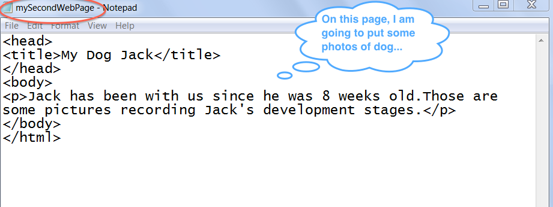
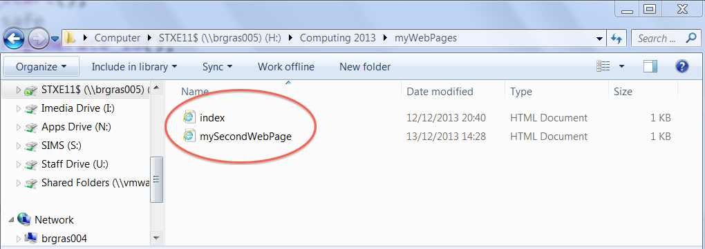

Learn to create your own webpages
Create Hyperlinks
- Create a second web page
Create a second web page just like what you have done with the web page index.html. If you forgot how to do it, just go back and follow the instructions. Save your second page as mySecondPage.html inside the same folder as your index.html.
This is my second page. Yours may be different:

You should now have two html files in your folder:
